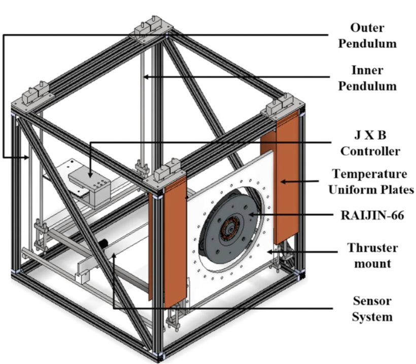
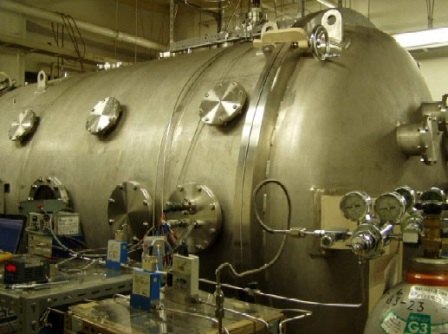
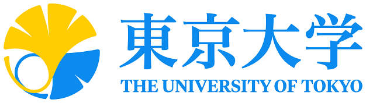
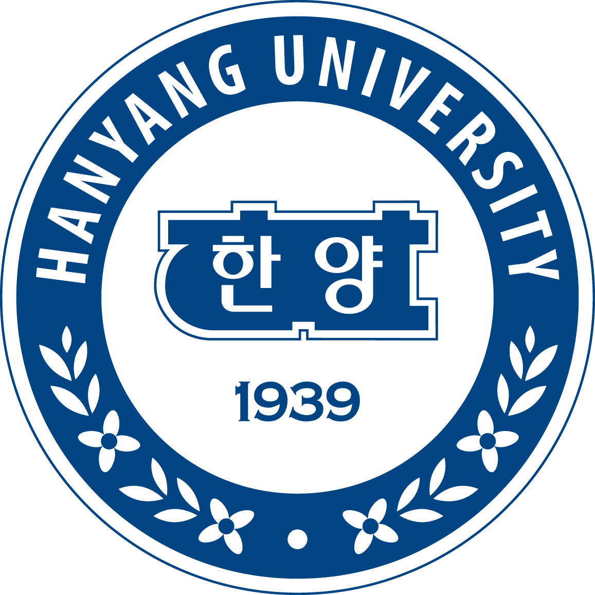

Hello, I'm Jiwon Lee.
Welcome to my personal website!
I am a PhD student in the Komurasaki & Koizumi Laboratory at the University of Tokyo.
- 🏛️ Affiliation: The University of Tokyo, Komurasaki & Koizumi Lab
- 🔬 Research Interest: Electric Propulsion, Hall Thrusters, Rarefied gas dynamics, DSMC method
- 📍 Location: Tokyo, Japan
Research Interest
My research focuses on the numerical and experimental analysis of Argon Hall thrusters to improve their performance.
- Electric Propulsion: Neutral flow dynamics in Hall thrusters, Alternative propellants (Argon, etc.)
- Numerical Simulation: Developing Direct Simulation Monte Carlo (DSMC) codes
Keywords
Experimental Facilities

2D Dual-Pendulum Thrust Stand for Hall Thrusters (1–100 mN class)
A high-precision two-dimensional dual-pendulum thrust stand for direct thrust measurement of Hall thrusters in the 1–100 mN range. It combines inner and outer pendulums, a J × B calibration/control system, temperature-uniform plates to suppress thermal drift, and a dedicated sensor system. Currently used to characterize the RAIJIN-66 argon Hall thruster.
Reference: doi:10.1063/1.2815336

Space Chamber
Vacuum facilities of the Department of Aeronautics and Astronautics, The University of Tokyo, used for electric propulsion as well as a wide range of space-environment experiments. The RAIJIN-66 and RAIJIN-30 Hall thrusters are currently under test here.
- ø2000 × L3000; 2 rotary pumps, booster pump, diffusion pump (3,275 + 37,000 L/s). Facility page →
Academic Work
Publications (Peer-Reviewed)
- N. Barth, K. Komurasaki, D. Satpathy, J. Lee, et al., "Magnetohydrodynamic Analysis of Acceleration Length and Magnetic Field Optimization in an Argon Hall Thruster", Journal of Applied Physics, Under Review
- D. Satpathy, K. Komurasaki, J. Lee, et al., “Impact of reverse flow induced by a sawtooth anode on the performance of an argon Hall thruster”, Journal of Applied Physics, American Institute of Physics Publishing, 2026, doi:10.1063/5.0307266
- J. Lee, et al., “Numerical Analysis of Rarefied Gas Flow Dominated by Wall Reflection in a Straight Channel”, Vacuum, 2026, doi:10.1016/j.vacuum.2025.114930
- D. Satpathy, H. Sekine, J. Lee, et al., "Influence of propellant injection directionality on the performance of an argon Hall thruster", Journal of Applied Physics, American Institute of Physics Publishing, 2024, doi:10.1063/5.0241386
International Conferences (Oral 4 · Poster 1 · · Total 11)
- D. Satpathy, H. Sekine, J. Lee, et al., "Enhancement of neutral particle density by propellant reversal through a sawtooth hollow anode", 39th International Electric Propulsion Conference, London, UK, Sep. 2025. Oral
- D. Satpathy, H. Sekine, J. Lee, et al., "Difference in plasma potential profiles between xenon and argon propellants in RAIJIN-66", 39th International Electric Propulsion Conference, London, UK, Sep. 2025. Oral
- N. Barth, D. Satpathy, J. Lee, et al., "Magnetohydrodynamic Analysis of High-Density Plasma Hall Thruster Operation", 39th International Electric Propulsion Conference, London, UK, Sep. 2025. Oral
- D. Satpathy, H. Sekine, J. Lee, et al., "An argon Hall thruster using a hollow anode with corrugated surface", 35th International Symposium on Space Technology and Science, Tokushima, Japan, Jul. 2025. Oral
- N. Barth, T. Suehiro, D. Satpathy, J. Lee, et al., "Magnetohydrodynamic Analysis of High Mass Flow Rate-Induced High-Density Plasma Hall Thruster Operation", 12th Asian Joint Propulsion Conference, Xi'an, China, Mar. 2025. Oral
- D. Satpathy, H. Sekine, J. Lee, et al., "Propellant Utilization Efficiency of an Argon Hall Thruster with Swirl Injection", 38th International Electric Propulsion Conference, Toulouse, France, Jun. 2024. Oral
Domestic Conferences (Oral 6 · Poster 1 · · Total 10)
- N. Barth, D. Satpathy, K. Komurasaki, J. Lee, et al., "The Role of the Hall Parameter in Magnetohydrodynamic Scaling of Hall Thrusters", 令和7年度 宇宙輸送シンポジウム, Kanagawa, Japan, Jan. 2026. Oral
- D. Satpathy, J. Lee, et al., "Impact of active anode cooling on argon Hall thruster performance", 第63回航空原動機・宇宙推進講演会, Sapporo, Japan, Mar. 2024. Oral
- D. Satpathy, H. Sekine, J. Lee, et al., "Ionization length estimation of RAIJIN-66 determined from performance measurements during its thermal transient operation", 令和5年度 宇宙輸送シンポジウム, Kanagawa, Japan, Jan. 2024. Oral
Experience
CFD Engineer
- Specializing in computational modeling of gas-liquid two-phase flows in industrial tanks.
Research Internship
Complex Micro-Fluids Lab, KIST (Korea Institute of Science and Technology), Republic of Korea
- Measurement of fluorescent particle velocity in microchannels through Particle Streak Velocimetry.
Education

Ph.D. in Aeronautics and Astronautics
The University of Tokyo, Japan
Department of Aeronautics and Astronautics, Graduate School of Engineering
Advisor: Kimiya Komurasaki, Ph.D.
M.S. in Aeronautics and Astronautics
The University of Tokyo, Japan
Department of Aeronautics and Astronautics, Graduate School of Engineering
Advisor: Kimiya Komurasaki, Ph.D.
Thesis: “Anode Design Optimization of Argon Hall Thrusters Based on DSMC Analysis of Neutral Particle Behavior”
Research Student in Aeronautics and Astronautics
The University of Tokyo, Japan
Department of Aeronautics and Astronautics, Graduate School of Engineering
Advisor: Kimiya Komurasaki, Ph.D.

B.S. in Mechanical Engineering
Hanyang University, Republic of Korea
School of Mechanical Engineering
Advisor: Rhokyun Kwak, Ph.D.
Thesis: “Electroconvective instability on liquid metal electrodes”
Honors & Awards
Most prestigious fellowship for Ph.D. students in Japan with an acceptance rate of approx. 9% (3/33 in the division), providing a three-year monthly stipend and research grant.
Grant number: 26KJ0944
Selected as the top student of the Fall 2024 cohort and honored as the representative award recipient.
Awarded the Grand Prize in the 'Future Tech' theme, ranking among the Top 3 out of 126 teams.
Awarded to the top 10% of graduation theses.
Skills
- Languages: Korean (Native), English (Fluent), Japanese (Fluent)
- Programming & Tools: C, C++, Fortran, Python, MATLAB, OpenFOAM, ParaView, AUTODESK Inventor, Ansys, LabVIEW
Activities & Others
- The 54th President, Korean Student Association, The University of Tokyo, Apr. 2026 - Mar. 2027
- Completed Deep Space Exploration Education Program, The University of Tokyo, Mar. 2025
- Completed Computational Science Alliance Program, The University of Tokyo, Mar. 2025
- Military Service in Army Aviation Command, R.O.K. Army, Jul. 2020 - Jan. 2022
Served as a Medium Utility Helicopter mechanic. - Student Council President, Pungmu High School, Mar. 2016 - Feb. 2017
Contact
Feel free to contact me for any inquiries or collaboration opportunities.
Komurasaki & Koizumi Lab
Graduate School of Engineering
Department of Aeronautics and Astronautics
The University of Tokyo
7-3-1, Hongo, Bunkyo, Tokyo Japan, 113-8656
TEL & FAX: +81-3-5841-6559
🎓 Google Scholar: Google Scholar Profile
🆔 ORCID: orcid.org/0009-0005-8982-1239
🔗 LinkedIn: linkedin.com/in/jiwon-lee
📧 Email: l.jiwon@al.t.u-tokyo.ac.jp